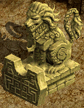

火炎傭兵団
通称「ガルカスクエ」。難易度は高め。| 火炎傭兵団 1 | |
|---|---|
火炎傭兵団の団長ジョーンヘダに、ガルカス悪魔軍集結地では補給路の確保が難しいため、早めに食糧確保を行わなければいけないと言われた。ワーラットを狩って、ワーラットの生肉を手に入れてこよう。 ワーラットの生肉を必要なだけ手に入れた。ガルカス悪魔軍集結地 Ｂ１にいるジョーンヘダのところに戻ろう。 ジョーンヘダに、ワーラットの生肉が食べられないペリーヤンとセリノが食べられる物がないか、神秘の沼周辺を調査中のナーチャルにも聞いてくるように言われた。 悪魔たちが食糧を保管しているらしき場所に、悪魔軍幹部が入るところを目撃したナーチャルから、幹部を退治して食糧を奪ってくるように言われた。 食糧倉庫で戦闘中に、古都ブルンネンシュティグ侵略計画提案書という内容の文書を見つけた。ガルカス悪魔軍集結地 Ｂ１にある神秘の沼付近を捜索しているナーチャルに相談しよう。 相談した結果、今は提案段階だとしても、悪魔たちはゴドム共和国と戦争をするつもりだということに間違いないだろうという結論が出た。ガルカス悪魔軍集結地 Ｂ１にいるジョーンヘダに報告しよう。 |
|
| 受諾場所 | ガルカス悪魔軍集結地 Ｂ１ ジョーンヘダ(18.19) |
| 受諾条件 | Lv600 |
| 報酬 | 経験値201万4000 |
| ガルカス悪魔軍集結地 Ｂ１ | ワーラット(Lv610)を倒す ジョーンヘダへ ナーチャル(35.80)へ 悪魔軍幹部(Lv625)Zinを倒す  魚の干物をクリック (10.60)周辺に17箇所あるが、少し時間が経つと何度でもクリックできる。  ナーチャルへ ジョーンヘダへ |
| 火炎傭兵団 2 | |
悪魔たちが、古都ブルンネンシュティグを攻撃しようとしている動きが確認されたことをジョーンヘダに報告した。この件に関して、神秘の沼で捜索中であるナーチャルと一緒に監視して確実な証拠を探し出そう。 ガルカス部隊の詰め所を調査中に、ダークパースーに見つかり、逃げる途中で怪我を負ったナーチャルが、神秘の沼付近で自分たちを探しているダークパースーたちを退治してくれという。 ダークパースーを退治した。ガルカス悪魔軍集結地 Ｂ１にいる神秘の沼で休憩しているナーチャルに教えてあげよう。 諜報部の悪魔ピエンドが、傭兵団と話し合いを試みたいという。まず古代悪魔を退治した後に、ガルカス部隊の詰め所内にある巨木に手を乗せるように言われた。 古代悪魔を退治した。ガルカス部隊の詰め所内にある巨木を通じてピエンドがいる場所に行こう。 ピエンドから、嵐の刃騎士団のキャンプ内にいる準騎士カイロンに会うように言われた。 |
|
| 受諾場所 | ガルカス悪魔軍集結地 Ｂ１ ジョーンヘダ(18.19) |
| 受諾条件 | Lv600 |
| 報酬 | 経験値161万1000 |
| ガルカス悪魔軍集結地 Ｂ１ | ナーチャル(35.80)へ ダークパースー(Lv625)Zinを倒す、アンテイム攻撃あり ナーチャルへ 古代悪魔(Lv625)Zinを倒す  巨木(13.135)をクリック、ワープ  ピエンド(5.192)へ、ワープ 準騎士カイロン(57.29)へ |
| 入団テスト 1 | |
ガルカス悪魔軍集結地 Ｂ１にいる準騎士カイロンの話では、嵐の刃騎士団に入団するためには、3つのテストを受けなければならない。1次テストは、大型骸骨の武器を奪うことだ。 ガルカス悪魔軍集結地 Ｂ１にいる準騎士カイロンの1次テストをクリアした。彼に報告しに行こう。 ガルカス悪魔軍集結地 Ｂ１にいる準騎士カイロンから、2次テストとして、斧槍兵 50匹を1時間以内に退治するように言われた。 制限時間を過ぎてしまった。ガルカス悪魔軍集結地 Ｂ１にいる準騎士カイロンのところに行って、テストをやり直そう。 ガルカス悪魔軍集結地 Ｂ１にいる準騎士カイロンの2次テストをクリアした。彼に報告しに行こう。 体力テストとして、準騎士カイロンから、神秘の沼付近にある大きな木に黄色い紐を結んで来るように言われた。大きな木に黄色い紐を結んで準騎士カイロンに報告すると、次の黄色い紐が渡されるので、計5回繰り返そう。 |
|
| 受諾場所 | ガルカス悪魔軍集結地 Ｂ１ 準騎士カイロン(57.29) |
| 受諾条件 | Lv600 |
| 報酬 | 経験値241万7000 |
| ガルカス悪魔軍集結地 Ｂ１ | 大型骸骨(Lv620)を倒す 準騎士カイロンへ 斧槍兵(Lv620)を50匹倒す 制限時間1時間、時間を過ぎると準騎士カイロンに戻ってやり直しになる。 準騎士カイロンへ 大きな木(43.79)をクリック、準騎士カイロンに戻り5回繰り返す  |
| 入団テスト 2 | |
嵐の刃騎士団キャンプにいる準騎士カイロンの3次テストをクリアした。彼に報告しに行こう。 嵐の刃騎士団キャンプにいる 準騎士カイロンに、4次テストとして食糧倉庫にいる悪魔軍幹部を生け捕りにするように言われた。生け捕り方法は、悪魔軍幹部の体力を奪った後、光の縛り縄を使えば良いらしい。 準騎士カイロンに言えば、新しい光の縛り縄がもらえます。 嵐の刃騎士団キャンプにいる 準騎士カイロンの4次テストを完了した。彼に報告しに行こう。 悪魔軍幹部の生け捕りに失敗した。嵐の刃騎士団キャンプにいる準騎士カイロンに報告しよう。 準騎士カイロンの入団テストをクリアした。嵐の刃騎士団本部にいる聖騎士グリースのところに行って入団手続きをしよう。 聖騎士グリースが、聖域付近にある石像に手をのせると監視者メリスがいる場所に行けると教えてくれた。監視者メリスの所に行き、指示された任務が完了したら、嵐の刃騎士団本部にいる聖騎士グリースに報告しよう。 |
|
| 受諾場所 | ガルカス悪魔軍集結地 Ｂ１ |
| 受諾条件 | Lv600 |
| 報酬 | 経験値80万5000 王の秘策 |
| ガルカス悪魔軍集結地 Ｂ１ | 準騎士カイロン(57.29)へ 悪魔軍幹部(Lv625)Zinを生け捕りにする。 HPバーの「悪」の字くらいまでHPを削ってから光の縛り縄を使用する。 光の縛り縄はベルトにセット可能。 失敗した場合は、準騎士カイロンに戻ってやり直す。 準騎士カイロンへ グリース(185.12)へ ○石像(216.62)をクリック、ワープ  監視者メリス(229.49)へ ○石(222.7)をクリック、ワープ グリースへ 王の秘策は取引・銀行保管・破壊不可。 「王の秘策が、強く光っている。」の青文字ログがでた時に、CPが全回復する。 |
| 王の秘策 | |
聖騎士グリースに、王の秘策がどんなものなのかを確認するため、ガルカス悪魔軍集結地 Ｂ１で生息するデスピンサー 50匹を退治してきてほしいといわれた。 王の秘策は、動物型モンスターには効果がなさそうだ。嵐の刃騎士団本部にいる聖騎士グリースのところに戻ろう。 聖騎士グリースに、王の秘策がどんなものなのかを確認するため、ガルカスの部下 250匹を退治するように言われた。 王の秘策は、ガルカスのすべての部下には効果がありそうだ。嵐の刃騎士団本部にいる聖騎士グリースのところに戻ろう。 聖騎士グリースから、ガルカス悪魔軍集結地 Ｂ２にいる料理長のところに行くように言われた。 |
|
| 受諾場所 | ガルカス悪魔軍集結地 Ｂ１ グリース(185.12) |
| 受諾条件 | Lv600 |
| 報酬 | 経験値402万8000 |
| ガルカス悪魔軍集結地 Ｂ１ | デスピンサー(Lv610)を50匹倒す グリースへ ドゥームスフィア(Lv625)、大型骸骨(Lv620)、斧槍兵(Lv620)、ホーンド(Lv625)を250匹倒す グリースへ |
| 食糧を補充しろ！ | |
聖騎士グリースに、ガルカス悪魔軍集結地 Ｂ２にいる料理長のところに行くように言われた。 ガルカス悪魔軍集結地 Ｂ２に派遣された嵐の刃騎士団が、食糧が無くて困っているらしい。料理長から、ガルカス悪魔軍集結地 Ｂ２に生息するワーラットを狩って、ワーラットの肉を手に入れてくるように言われた。 嵐の勲章を集める反復クエスト。嵐の勲章 Aを 10個集めよう。 ワーラットの肉をすべて手に入れた。ガルカス悪魔軍集結地 Ｂ２にいる料理長のところに戻ろう。 嵐の勲章を集める反復クエスト。嵐の勲章 Aを 10個集めよう。 戦場では気軽に火を使うことができない！料理をする時は、常に熱を持っているドレイクの肉を火の代わりに使う。料理長から、ガルカス悪魔軍集結地 Ｂ２に生息するドレイクを狩って、ドレイクの肉 30個を手に入れてくるように言われた。 嵐の勲章を集める反復クエスト。嵐の勲章 Aを 10個集めよう。 調理に使う火の代わりになる熱を帯びたドレイクの肉をすべて手に入れた。ガルカス悪魔軍集結地 Ｂ２にいる料理長のところに戻ろう。 嵐の勲章を集める反復クエスト。嵐の勲章 Aを 10個集めよう。 気が付いたら警備兵への昇級試験を受ける資格が揃っていたようだ。ガルカス悪魔軍集結地 Ｂ１にいる聖騎士グリースのところに行って昇級試験を受けよう。 |
|
| 受諾場所 | ガルカス悪魔軍集結地 Ｂ１ グリース(185.12) |
| 受諾条件 | Lv600 |
| 報酬 | 経験値676万8000 |
| ガルカス悪魔軍集結地 Ｂ２ | 嵐の勲章Aを10個集める反復クエスト 料理長(223.10)へ ワーラット(Lv650)を倒す 料理長へ ドレイク(Lv650)を倒す 料理長へ、嵐の勲章Aを1個入手 以上を10回繰り返して嵐の勲章Aを10個集める。途中で死亡すると1個失う。 |
| ガルカス悪魔軍集結地 Ｂ１ | グリースへ |
| 食糧配達 | |
聖騎士グリースに、ガルカス悪魔軍集結地 Ｂ２にいる料理長のところに行くように言われた。 お腹を空かせた兵士らが心待ちにしているさっぱりダブルステーキが完成した。ガルカス悪魔軍集結地 Ｂ２で任務遂行中の嵐の刃騎士団 30人にさっぱりダブルステーキを配達しよう。 嵐の勲章を集める反復クエスト。嵐の勲章 Bを 20個集めよう。 すべての兵士たちに食糧を配達した。ガルカス悪魔軍集結地 Ｂ２にいる料理長のところに戻ろう。 嵐の勲章を集める反復クエスト。嵐の勲章 Bを 20個集めよう。 嵐の刃騎士団の幹部職である二十長に昇級しなければならない。ガルカス悪魔軍集結地 Ｂ１にいる聖騎士グリースのところに行って昇級試験を受けよう。 |
|
| 受諾場所 | ガルカス悪魔軍集結地 Ｂ１ グリース(185.12) |
| 受諾条件 | Lv600 |
| 報酬 | 経験値604万3000 |
| ガルカス悪魔軍集結地 Ｂ２ | 嵐の勲章Bを20個集める反復クエスト 料理長(223.10)へ 兵士30人へ 嵐の刃騎士団兵25人(8.68)(13.46)(16.41)(36.209)(43.183)(47.188)(60.135)(60.142)(61.46)(63.172)(65.49)(66.180)(73.182)(82.52)(83.182)(126.54)(126.67)(157.210)(190.223)(194.223)(199.128)(201.131)(209.114)(215.12)(221.12) 偵察兵ヘンリー(23.15) うっかり屋メロ(140.59) 臆病マイキ(151.209) 新兵ガルリア(191.62) 捜索隊員ジン(62.89) 捜索隊員ミバ(66.89) 捜索隊員マロ(64.84) など32人いるが、少し時間が経つと何度でも配達できる。 料理長へ、嵐の勲章Bを6個入手 以上を4回繰り返して嵐の勲章Bを20個集める。途中で死亡すると1個失う。 |
| ガルカス悪魔軍集結地 Ｂ１ | グリースへ |
| 巡察 | |
グリースに、ガルカス悪魔軍集結地 Ｂ２にいるザロックのところに行くように言われた。 新任幹部と兵士の間でケンカが始まったようだ。ガルカス悪魔軍集結地 Ｂ２を巡察して、嵐の刃騎士団の兵士たちが任務中に、さぼっているのを見つけた場合は叱ろう。 嵐の勲章を集める反復クエスト。嵐の勲章 Cを 20個集めよう。 巡察を完了した。ガルカス悪魔軍集結地 Ｂ２にいる突撃隊長ザロックのところに行って報告しよう。 嵐の勲章を集める反復クエスト。嵐の勲章 Cを 20個集めよう。 百長に昇級する資格が揃った。ガルカス悪魔軍集結地 Ｂ１にいる聖騎士グリースのところに行って昇級試験を受けよう。 |
|
| 受諾場所 | ガルカス悪魔軍集結地 Ｂ１ グリース(185.12) |
| 受諾条件 | Lv600 |
| 報酬 | 経験値241万9000 |
| ガルカス悪魔軍集結地 Ｂ２ | 嵐の勲章Cを20個集める反復クエスト ザロック(237.26)へ 兵士20人へ 嵐の刃騎士団兵25人(8.68)(13.46)(16.41)(36.209)(43.183)(47.188)(60.135)(60.142)(61.46)(63.172)(65.49)(66.180)(73.182)(82.52)(83.182)(126.54)(126.67)(157.210)(190.223)(194.223)(199.128)(201.131)(209.114)(215.12)(221.12) 偵察兵ヘンリー(23.15) うっかり屋メロ(140.59) 臆病マイキ(151.209) 新兵ガルリア(191.62) 捜索隊員ジン(62.89) 捜索隊員ミバ(66.89) 捜索隊員マロ(64.84) など32人いるが、少し時間が経つと何度でも話せる。 ザロックへ、嵐の勲章Cを10個入手 以上を2回繰り返して嵐の勲章Cを20個集める。途中で死亡すると1個失う。 |
| ガルカス悪魔軍集結地 Ｂ１ | グリースへ |
| 悩み解決 | |
グリースに、ガルカス悪魔軍集結地 Ｂ２にいるザロックのところに行くように言われた。 突撃隊長ザロックに、兵士たちの悩みを聞くためには、料理長の隣で任務中のタリスから話を聞くように言われた。料理長は、ガルカス悪魔軍集結地 Ｂ２の入口付近にいる。 まだ部下たちの好感度が低いようだ。ガルカス悪魔軍集結地 Ｂ２にいるタリスのところに行って、悩みをかかえている兵士が他にもいるのか聞いてみよう。 まだ部下たちの好感度が低いようだ。ガルカス悪魔軍集結地 Ｂ２にいるタリスのところに行って、悩みをかかえている兵士が他にもいるのか聞いてみよう。 部下たちの心をつかんだようだ。ガルカス悪魔軍集結地 Ｂ２にいる突撃隊長ザロックに報告しよう。 突撃隊長ザロックに、ガルカス悪魔軍集結地 Ｂ１にいる聖騎士グリースのところに行って、昇級試験を受けるように言われた。 |
|
| 受諾場所 | ガルカス悪魔軍集結地 Ｂ１ グリース(185.12) |
| 受諾条件 | Lv600 |
| 報酬 | 経験値161万1000 |
| ガルカス悪魔軍集結地 Ｂ２ | ザロック(237.26)へ タリス(217.11)へ、ウルトリアの苦悩に移行 タリスへ、新兵ガルリアの苦悩に移行 タリスへ、偵察兵ヘンリーの苦悩に移行 ザロックへ |
| ガルカス悪魔軍集結地 Ｂ１ | グリースへ |
| ウルトリアの苦悩 | |
賭けに負けてダブルステーキを奪われてしまった食いしん坊のウルトリアに、最高級ダブルステーキを作ってあげよう。材料は、ガルカス悪魔軍集結地 Ｂ２で生息するワーラットとドレイクを狩って高級肉を手に入れよう。 食いしん坊のウルトリアのために、最高級ダブルステーキを作る材料をすべて手に入れた。ガルカス悪魔軍集結地 Ｂ２にいる料理長のところに戻って調理してくれるように頼もう。 最高級ダブルステーキが完成した。ガルカス悪魔軍集結地 Ｂ２にいるウルトリアに届けよう。 |
|
痩せてしまったと悩んでいる食いしん坊のウルトリアのために、ガルカス悪魔軍集結地 Ｂ２に生息するワーラットを狩って、ワーラットに柔らかい肉 50個を手に入れてこよう。 ガルカス悪魔軍集結地 Ｂ２で任務中の食いしん坊のウルトリアに、ワーラットの柔らかい肉をあげよう。 |
|
一ヶ月間集めてきた食糧を奪われた食いしん坊のウルトリアが持っていた厚ぼったい食糧袋を奪ったワーラットは、きっとガルカス悪魔軍集結地 Ｂ２のどこかにいるはずだ。泣いている食いしん坊のウルトリアのために、厚ぼったい食糧袋を取り戻そう。 ガルカス悪魔軍集結地 Ｂ２で任務中である食いしん坊のウルトリアに、取り戻した厚ぼったい食糧袋を渡してあげよう。 |
|
| 受諾場所 | ガルカス悪魔軍集結地 Ｂ２ タリス(217.11) |
| 受諾条件 | Lv600 |
| 報酬 | - |
| ガルカス悪魔軍集結地 Ｂ２ | (1)～(3)のクエストをランダムで受諾 (1)最高級ダブルステーキを作る ワーラット(Lv650)とドレイク(Lv650)を倒す 料理長(223.10)へ (2)ワーラットの柔らかい肉50個を集める ワーラット(Lv650)を倒す (3)厚ぼったい食糧袋を取り戻す ワーラット(Lv650)を倒す ウルトリア(225.12)へ、悩み解決に戻る |
| 新兵ガルリアの苦悩 | |
先任からよく叱れて悩んでいる新兵ガルリアに会ってみよう。彼は、ドレイク生息地から少し行った場所にいるらしい。 ガルカス悪魔軍集結地 Ｂ２の突撃隊長ザロックの近くで任務中の先任兵ルディンに、新兵ガルリアをもう少し優しく指導するように話してみよう。 |
|
ドレイク生息地周辺で任務中の新兵ガルリアが、ガルカス悪魔軍集結地 Ｂ２に生息するラッシュフレイムから逃げる最中に日記帳を失くしてしまった。ラッシュフレイムを退治して、ガルリアの日記帳を探し出そう。 ドレイク生息地周辺で任務中の新兵ガルリアに日記帳を返してあげよう。 |
|
暑さに弱い新兵ガルリアのために、ガルカス悪魔軍集結地 Ｂ２に生息するハートレッシュを退治して血液を手に入れよう。 ドレイク生息地周辺で任務中の新兵ガルリアにハートレッシュの血液をあげよう。 |
|
| 受諾場所 | ガルカス悪魔軍集結地 Ｂ２ タリス(217.11) |
| 受諾条件 | Lv600 |
| 報酬 | - |
| ガルカス悪魔軍集結地 Ｂ２ | (1)～(3)のクエストをランダムで受諾 (1)先任兵ルディンを諭す 新兵ガルリア(191.62)へ 先任兵ルディン(238.26)へ (2)ガルリアの日記帳を探す ラッシュフレイム(Lv650)を倒す 新兵ガルリアへ (3)ハートレッシュの血液を集める ハートレッシュ(Lv650)を倒す 新兵ガルリアへ 悩み解決に戻る |
| 偵察兵ヘンリーの苦悩 | |
ガルカス悪魔軍集結地 Ｂ２で任務中の偵察兵ヘンリーが、ハンマーフォースのハンマーを研究したいようだ。第1防衛地域に多く出没するハンマーフォースを退治してハンマーを手に入れよう。 ガルカス悪魔軍集結地 Ｂ２で任務中の偵察兵ヘンリーに、ハンマーフォースのハンマーを渡そう。 |
|
ガルカス悪魔軍集結地 Ｂ２で任務中の偵察兵ヘンリーが、ハンマーフォースの身体構造を研究したいようだ。第1防衛地域に多く出没するハンマーフォースを退治し、ハンマーフォースの身体標本を手に入れよう。 ガルカス悪魔軍集結地 Ｂ２で任務中の偵察兵ヘンリーに、ハンマーフォースの身体標本を渡そう。 |
|
ガルカス悪魔軍集結地 Ｂ２で任務中の偵察兵ヘンリーが、ハンマーフォースの赤い耳を研究したいようだ。ハンマーフォースを退治し、ハンマーフォースの赤い耳を手に入れよう。 ガルカス悪魔軍集結地 Ｂ２で任務中の偵察兵ヘンリーに、ハンマーフォースの赤い耳を渡そう。 |
|
| 受諾場所 | ガルカス悪魔軍集結地 Ｂ２ タリス(217.11) |
| 受諾条件 | Lv600 |
| 報酬 | - |
| ガルカス悪魔軍集結地 Ｂ２ | (1)～(3)のクエストをランダムで受諾 (1)ハンマーフォースのハンマーを入手する ハンマーフォース(Lv650)を倒す (2)ハンマーフォースの身体標本を入手する ハンマーフォース(Lv650)を倒す (3)ハンマーフォースの赤い耳を入手する ハンマーフォース(Lv650)を倒す 偵察兵ヘンリー(23.15)へ、悩み解決に戻る |
| 一網打尽！ | |
グリースに、ガルカス悪魔軍集結地 Ｂ２にいる聖騎士エセルのところに行くように言われた。 嵐の刃騎士団が襲撃隊に襲われ、大きな被害を受けた。これを受けて、聖騎士エセルから、ガルカス悪魔軍集結地 Ｂ２にいる襲撃隊をすべて退治するように言われた。 嵐の勲章を集める反復クエスト。嵐の勲章 Dを 80個集めよう。 任務を完遂した。ガルカス悪魔軍集結地 Ｂ２にいる聖騎士エセルに報告しよう。 嵐の勲章を集める反復クエスト。嵐の勲章 Dを 80個集めよう。 嵐の刃騎士団が伏撃隊に襲われ、大きな被害を受けた。これを受けて、聖騎士エセルから、ガルカス悪魔軍集結地 Ｂ２にいる伏撃隊をすべて退治するように言われた。 嵐の勲章を集める反復クエスト。嵐の勲章 Dを 80個集めよう。 敵の情報が必要だ。ガルカス悪魔軍集結地 Ｂ２で冷酷な幹部を退治して作戦計画書を奪おう。 嵐の勲章を集める反復クエスト。嵐の勲章 Dを 80個集めよう。 現在、ガルカスの兵力が、嵐の刃騎士団の兵力を上回っているようだ。そのため、聖騎士エセルから、ガルカス悪魔軍集結地 Ｂ２にいるハートレッシュ、ハンマーフォース、ラッシュフレイムを退治してガルカスの兵力を減らすように言われた。 嵐の勲章を集める反復クエスト。嵐の勲章 Dを 80個集めよう。 |
|
| 受諾場所 | ガルカス悪魔軍集結地 Ｂ１ グリース(185.12) |
| 受諾条件 | Lv600 |
| 報酬 | - |
| ガルカス悪魔軍集結地 Ｂ２ | 嵐の勲章Dを80個集める反復クエスト エセル(59.138)へ (1)～(4)のクエストをランダムで受諾 (1)襲撃隊を退治する 襲撃隊(Lv650)Zinを10匹倒す、10分湧き (2)伏撃隊を退治する 伏撃隊(Lv640)Zinを20匹倒す (3)作戦計画書を奪う 冷酷な幹部(Lv650)Zinを倒す (4)ガルカスの兵力を減らす ハートレッシュ(Lv650)、ハンマーフォース(Lv650)、ラッシュフレイム(Lv650)を100匹倒す エセルへ、嵐の勲章Dを10個入手 以上を8回繰り返して嵐の勲章Dを80個集める。途中で死亡すると1個失う。 |
| ガルカス討伐！ | |
司令室にいる悪魔軍の最高司令官である悪魔ガルカスを退治しよう！ ガルカスを退治した。ガルカス悪魔軍集結地 Ｂ２にいる聖騎士エセルのところに戻ろう。 |
|
| 受諾場所 | ガルカス悪魔軍集結地 Ｂ２ エセル(59.138) |
| 受諾条件 | Lv600 |
| 報酬 | 経験値523万7000 |
| ガルカス悪魔軍集結地 Ｂ２ | ガルカス(Lv650)Zinを倒す。非アクティブ、全属性魔法抵抗90％以上。 タゲを取ると、司令室の四隅にいる狂魔(Lv650)Zin、リッチ(Lv650)Zin、ブラックフレイム(Lv650)、ジャイアント骸骨(Lv650)Zinが司令室の中央に移動する。 ガルカスのタゲを取る前に倒しておいても可。 エセルへ クエスト終了後も王の秘策が残るが、B1の騎士団所属管理者(184.10)に話すと回収される。 |
[参考] Yotsuba Quest DataBase